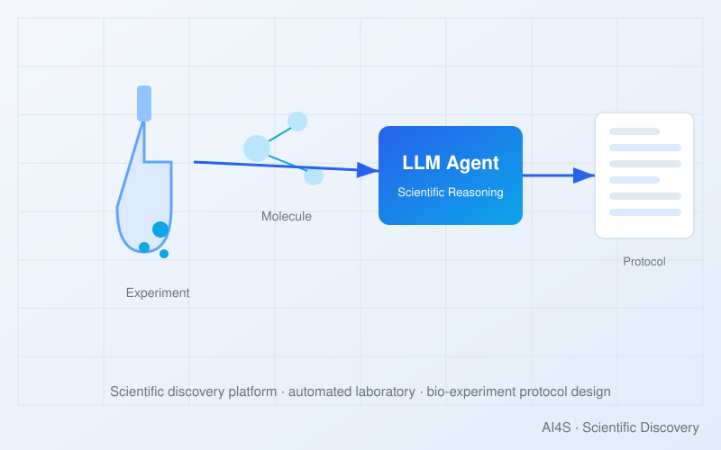

AI4S (AI for Science)
Scientific discovery platform and automated laboratory: LLM agents that reason over wet-lab experiments — bio-experimental protocol generation with structured reward mechanisms, and large-scale LLM routing/aggregation for science workloads.
Representative papers:
- H. Sun et al., Unleashing Scientific Reasoning for Bio-experimental Protocol Generation via Structured Component-based Reward Mechanism, ICLR, 2026.
- S. Tang et al., Beyond Gemini-3-Pro: Revisiting LLM Routing and Aggregation at Scale, ICML, 2026.